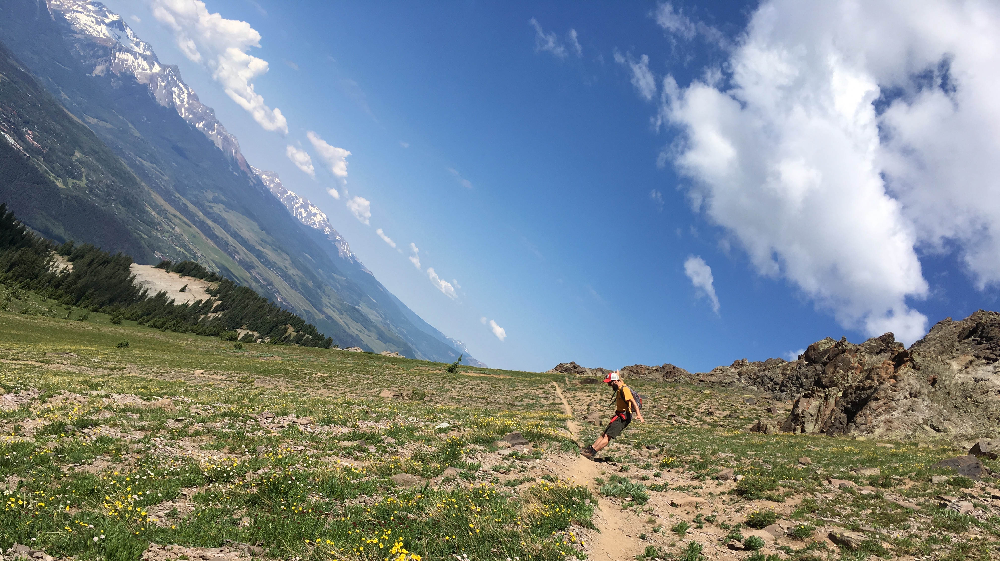
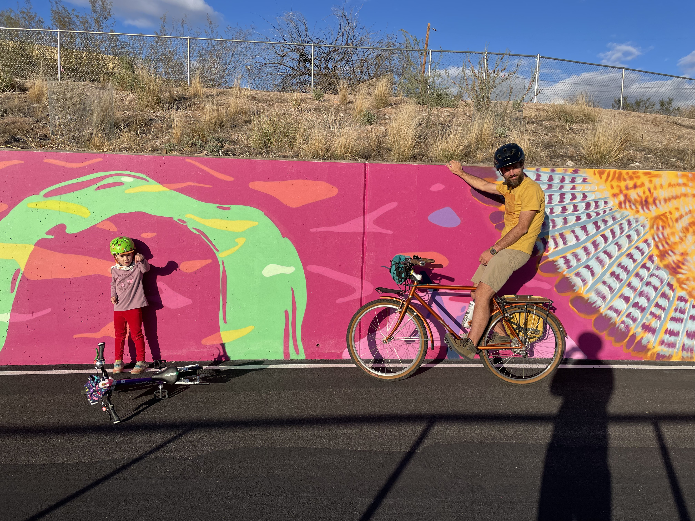

|  |
I am an Assistant Professor of Statistics in the Department of Mathematics at the University of Arizona. I am originally from Tucson and happy to be back after spending 11 years studying and working around the Southwest. Before starting at the UofA in Fall 2023, I was an assistant professor at San Diego State University for four years. I am trained as a statistician (PhD, Colorado State University), a mathematician, (BS in Math and Physics, UofA) and an educator (Masters in Education, UofA). My research focuses primarily on the development of new methods for the study of stochastic processes and networks, especially for spatio-temporal applications in ecology. I also work on developing new computational tools that provide approximate statistical inferential procedures for large data sets. My students and I make up the Toyon Statistical Lab. If you would like to work with me, please send me an email with a brief description of your research interests. We'll set up a meeting to chat. |
| 2026 |
|---|
|
| 2025 |
|
| 2024 |
|
| 2023 |
|
| 2022 |
|
| 2021 |
|
| 2020 |
|
| 2019 |
|
| 2018 |
|
| 2015 |
|
| 2013 |
|
Movement of polar bears in the Chukchi and Beaufort seas.
Scharf, H. R., M. B. Hooten, R. R. Wilson, G. M. Durner, T. C. Atwood (2019). Accounting for phenology in the analysis of animal movement. Biometrics, 75: 810–820.
Movement of killer whales near the Antarctic peninsula.
Scharf, H. R., M. B. Hooten, B. K. Fosdick, D. S. Johnson, J. M. London, and J. W. Durban. (2016). Dynamic social networks based on movement. Annals of Applied Statistics. 10(4), 2182–2202.
Movement of Greenland White Fronted Geese on the east coast of Ireland.
Hooten, M. B., H. R. Scharf, T. J. Hefley, A. T. Pearse, M. D. Weegman (2018).
Animal movement models for migratory individuals and groups.
Methods in Ecology and Evolution. 9, 1692–1705.
|
*Student contributor "It's amazing how much you don't notice when you're not paying attention." --Tom Magliozzi Copyright Henry Scharf | Last updated February 19, 2026 |